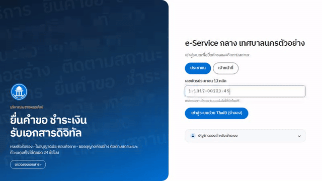
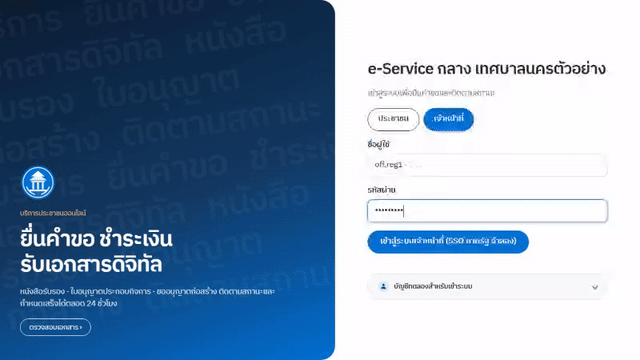
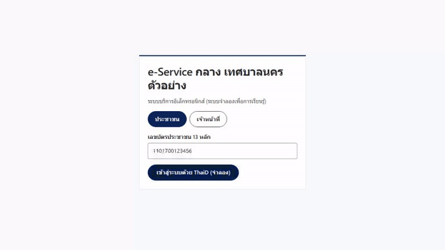
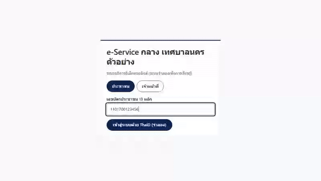
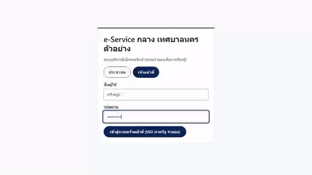
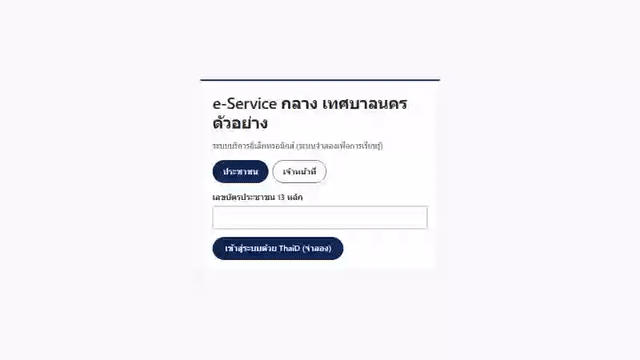

TC-AUDIT-01 เหตุการณ์และฟิลด์ใน Audit @P1
TC-AUDIT-02 Audit แก้/ลบไม่ได้ (405) @P1
TC-AUDIT-03 กรองช่วงวันที่ตามเวลาไทย @P1
TC-AUTH-01 เลขบัตร 13 หลัก + checksum @P1

TC-AUTH-02 OTP ผิด 3 ครั้งล็อก 15 นาที @P1
TC-AUTH-03 ลงทะเบียนครั้งแรก @P1
TC-AUTH-04 เจ้าหน้าที่ SSO จำลองและหน้าตั้งต้น @P2
ไม่ทำ GIF: ไม่ใช่ระดับ P1
TC-DASH-01 Dashboard ตัวเลขเริ่มต้น @P1
TC-DASH-02 Dashboard ย้อนหลัง @P1
TC-DASH-03 ส่งออก Excel/PDF เท่าหน้าจอ @P2
ไม่ทำ GIF: ไม่ใช่ระดับ P1
TC-DASH-04 ค่าขอบ "ทันกำหนด" 16:29:59 / 16:30:00 / 16:30:01 @P1

TC-DOC-01 ออกเอกสารและข้อมูลในเอกสาร @P1
ไม่มี GIF: test นี้ไม่ได้เปิดเบราว์เซอร์ (เรียก API อย่างเดียว)
TC-DOC-02 ตรวจเอกสาร /verify @P1
ไม่มี GIF: test นี้ไม่ได้เปิดเบราว์เซอร์ (เรียก API อย่างเดียว)
TC-DOC-03 เอกสารหมดอายุและลายเซ็นไม่ตรง @P1
ไม่มี GIF: test นี้ไม่ได้เปิดเบราว์เซอร์ (เรียก API อย่างเดียว)
TC-FEE-01 ค่าธรรมเนียม SV-01/SV-02/SV-03 @P1

TC-NFR-01 Responsive 375/768/1280 @P1
TC-NFR-02 WCAG: axe + คีย์บอร์ด + label + สถานะไม่ใช้สีอย่างเดียว @P1
TC-NFR-02B คีย์บอร์ดอย่างเดียวยื่นคำขอจนถึงสร้าง QR @P1

TC-NFR-03 Health เวลาโหลด และผลซ้ำได้ @P2
ไม่ทำ GIF: ไม่ใช่ระดับ P1
TC-NFR-03B ปิด hook เมื่อไม่ตั้ง TEST_MODE @P2
ไม่ทำ GIF: ไม่ใช่ระดับ P1
TC-NFR-04 เข้ารหัสข้อมูลส่วนบุคคลที่เก็บ (inspection) @P2
ไม่ทำ GIF: ไม่ใช่ระดับ P1
TC-NOTI-01 ผู้รับแจ้งเตือนตามระดับ @P1
ไม่มี GIF: test นี้ไม่ได้เปิดเบราว์เซอร์ (เรียก API อย่างเดียว)
TC-NOTI-02 ไม่แจ้งซ้ำ ข้ามระดับ และขั้นรออนุมัติ/รอออกเอกสาร @P1
ไม่มี GIF: test นี้ไม่ได้เปิดเบราว์เซอร์ (เรียก API อย่างเดียว)
TC-PAY-01 อายุ QR 15:00 @P1
TC-PAY-02 ยอดเงินและ callback ซ้ำ @P1
ไม่มี GIF: test นี้ไม่ได้เปิดเบราว์เซอร์ (เรียก API อย่างเดียว)
TC-PAY-03 ชำระพร้อมกัน เลขไม่ซ้ำ @P1
ไม่มี GIF: test นี้ไม่ได้เปิดเบราว์เซอร์ (เรียก API อย่างเดียว)
TC-PAY-04 เลขคำขอข้ามปี 2569 -> 2570 @P2
ไม่ทำ GIF: ไม่ใช่ระดับ P1
TC-PDPA-01 ปิดบังเลขบัตรบนจอ @P1
TC-PDPA-02 API (JSON) ไม่ส่งเลขบัตรเต็ม @P1
ไม่มี GIF: test นี้ไม่ได้เปิดเบราว์เซอร์ (เรียก API อย่างเดียว)
TC-PDPA-03 แสดงเลขเต็มต้องมีเหตุผลและบันทึก Audit @P1
TC-QUEUE-01 ลำดับคิวและขอบเขตแผนก @P1
ไม่มี GIF: test นี้ไม่ได้เปิดเบราว์เซอร์ (เรียก API อย่างเดียว)
TC-QUEUE-02 รับเรื่องซ้อน (พร้อมกันและต่อกัน) @P1
ไม่มี GIF: test นี้ไม่ได้เปิดเบราว์เซอร์ (เรียก API อย่างเดียว)
TC-QUEUE-03 งานในมือสูงสุด 10 @P1
ไม่มี GIF: test นี้ไม่ได้เปิดเบราว์เซอร์ (เรียก API อย่างเดียว)
TC-RBAC-01 ประชาชนเปิดคำขอคนอื่นไม่ได้ (IDOR) @P1
TC-RBAC-02 เจ้าหน้าที่อนุมัติ SV-02 ไม่ได้ (ตรวจที่ API) @P1

TC-RBAC-03 ตารางสิทธิ์หน้า/API ตามบทบาท @P1
TC-RBAC-04 ผู้ดูแลระบบ: บริการ วันหยุด ผู้ใช้ และยอดที่ล็อก @P2
ไม่ทำ GIF: ไม่ใช่ระดับ P1
TC-RBAC-05 สิทธิ์เปิด/ดาวน์โหลดไฟล์แนบ @P1
TC-RBAC-06 ผู้ดูแลระบบ: ช่วงค่าที่ยอมรับ @P2
ไม่ทำ GIF: ไม่ใช่ระดับ P1
TC-SLA-01 กำหนดเสร็จตามตารางวันที่ แถว a @P1
ไม่มี GIF: test นี้ไม่ได้เปิดเบราว์เซอร์ (เรียก API อย่างเดียว)
TC-SLA-01 กำหนดเสร็จตามตารางวันที่ แถว b @P1
ไม่มี GIF: test นี้ไม่ได้เปิดเบราว์เซอร์ (เรียก API อย่างเดียว)
TC-SLA-01 กำหนดเสร็จตามตารางวันที่ แถว c @P1
ไม่มี GIF: test นี้ไม่ได้เปิดเบราว์เซอร์ (เรียก API อย่างเดียว)
TC-SLA-01 กำหนดเสร็จตามตารางวันที่ แถว d @P1
ไม่มี GIF: test นี้ไม่ได้เปิดเบราว์เซอร์ (เรียก API อย่างเดียว)
TC-SLA-01 กำหนดเสร็จตามตารางวันที่ แถว e @P1
ไม่มี GIF: test นี้ไม่ได้เปิดเบราว์เซอร์ (เรียก API อย่างเดียว)
TC-SLA-01 กำหนดเสร็จตามตารางวันที่ แถว f @P1
ไม่มี GIF: test นี้ไม่ได้เปิดเบราว์เซอร์ (เรียก API อย่างเดียว)
TC-SLA-01 กำหนดเสร็จตามตารางวันที่ แถว g @P1
ไม่มี GIF: test นี้ไม่ได้เปิดเบราว์เซอร์ (เรียก API อย่างเดียว)
TC-SLA-01 กำหนดเสร็จตามตารางวันที่ แถว h @P1
ไม่มี GIF: test นี้ไม่ได้เปิดเบราว์เซอร์ (เรียก API อย่างเดียว)
TC-SLA-01 กำหนดเสร็จตามตารางวันที่ แถว i @P1
ไม่มี GIF: test นี้ไม่ได้เปิดเบราว์เซอร์ (เรียก API อย่างเดียว)
TC-SLA-02 หยุดนับ SLA ระหว่างรอแก้ไข @P1
ไม่มี GIF: test นี้ไม่ได้เปิดเบราว์เซอร์ (เรียก API อย่างเดียว)
TC-SLA-03 ระดับเตือน ปกติ/ใกล้/เกิน @P1
ไม่มี GIF: test นี้ไม่ได้เปิดเบราว์เซอร์ (เรียก API อย่างเดียว)
TC-SUBMIT-01 ยื่นคำขอ SV-01 ครบวงจร @P1

TC-SUBMIT-02 เอกสารบังคับครบก่อนชำระ @P1
TC-SUBMIT-03 ร่าง การลบร่าง และการยกเลิก @P2
ไม่ทำ GIF: ไม่ใช่ระดับ P1
TC-UPLOAD-01 ขนาดและจำนวนไฟล์ @P1
TC-UPLOAD-02 ชนิดไฟล์จากเนื้อไฟล์ @P1
TC-WORKFLOW-01 SV-01 อนุมัติ + ออกเอกสาร @P1
ไม่มี GIF: test นี้ไม่ได้เปิดเบราว์เซอร์ (เรียก API อย่างเดียว)
TC-WORKFLOW-02 SV-02 ผ่านหัวหน้า @P1
ไม่มี GIF: test นี้ไม่ได้เปิดเบราว์เซอร์ (เรียก API อย่างเดียว)
TC-WORKFLOW-03 SV-03 สามขั้นตอน @P1
ไม่มี GIF: test นี้ไม่ได้เปิดเบราว์เซอร์ (เรียก API อย่างเดียว)
TC-WORKFLOW-04 ตีกลับสูงสุด 2 ครั้ง และผลหลังครบ @P1
ไม่มี GIF: test นี้ไม่ได้เปิดเบราว์เซอร์ (เรียก API อย่างเดียว)
TC-WORKFLOW-05 เหตุผล >= 10 ตัวอักษร @P1
ไม่มี GIF: test นี้ไม่ได้เปิดเบราว์เซอร์ (เรียก API อย่างเดียว)
TC-WORKFLOW-06 เวลาแก้ไข 168 ชั่วโมง @P1
ไม่มี GIF: test นี้ไม่ได้เปิดเบราว์เซอร์ (เรียก API อย่างเดียว)